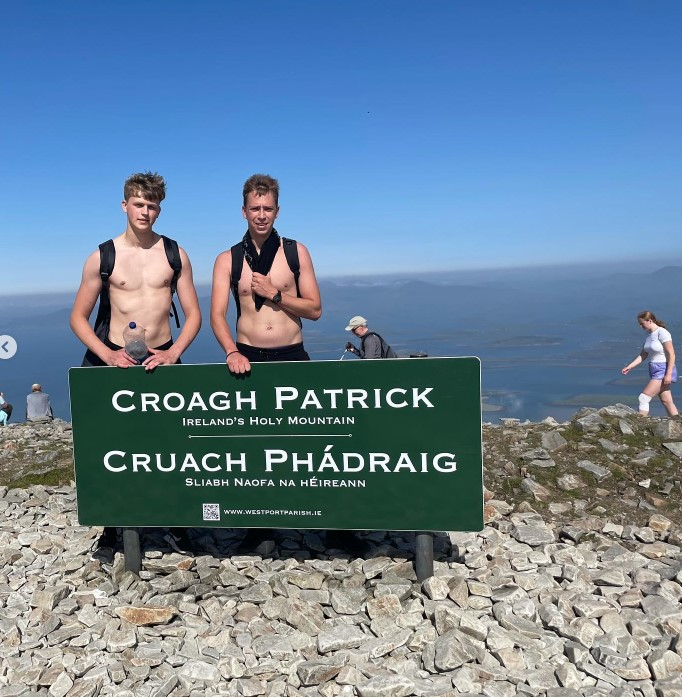
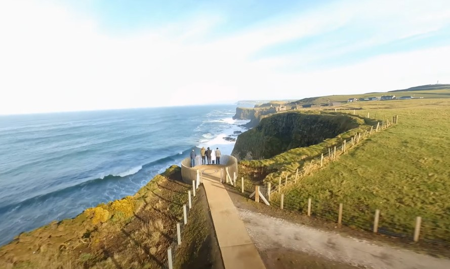
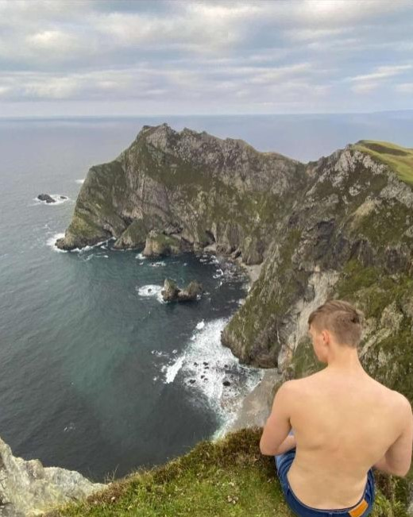

<!DOCTYPE html> 
<html lang="en">
<meta charset="utf-8">
</html>
<head>
	<title>Travel Blog - Ireland</title>
	<link rel="stylesheet" type="text/css" href="index.css">
	<link rel="shortcut icon" type="image/jpg" href="favicon-32x32.png">
	<meta name="description" content="travel blog ireland">
	<meta name="keywords" content="travel">
	<meta name="author" content="vlad khokha">
	<meta name="viewport" content="width=device-width, initial-scale=1.0">
</head>
<body>
	<!--Header-->
	<header>

		<h1> - My Journey - </h1>
	</header>	

	<!--Navigation-->
	<nav>
		
		<ul>
			<li><a href="index.html">Home</a></li>
			<li><a href="destinations.html">Destinations</a></li>
			<li><a href="aboutireland.html">My Journey</a></li>
			<li><a href="contact.html">Contact</a></li>
		</ul>
	</nav>

	<!--Main Content-->
	<main>
		<section class="intro">
			<h2>Places I Visited</h2>
			<p>Listed below are some of the best places i have visited accross Ireland. Mostly containing a scenic view from the mountain cliffs to the ocean views. </p>
		</section>

		<section id="croagh patrick" class="image">
			
			<div class="image-row">
				
				<div class="image-text">
					<iframe src="https://www.google.com/maps/embed?pb=!1m14!1m8!1m3!1d188348.55675962364!2d-9.77898633057604!3d53.74208278022004!3m2!1i1024!2i768!4f13.1!3m3!1m2!1s0x48597e9f44519b6f%3A0xd5945527f27d7c32!2sCroagh%20Patrick!5e0!3m2!1sen!2sie!4v1681149674769!5m2!1sen!2sie" width="300" height="120" style="border:5px;" allowfullscreen="" loading="lazy" referrerpolicy="no-referrer-when-downgrade"></iframe>
					<p><h6>Croagh Patrick, Co.Mayo</h6> A soaring cone-shaped peak that rises above Clew Bay in Co Mayo, is where the Irish have always turned for guidance and reassurance before the harvest. People have been coming for well over 3,000 years, since our Neolithic ancestors first recognised its potency as a sacred site.</p>
				</div>
			</div>
		</section>

		<section id="carantuhil" class="image">
			
			<div class="image-row">
			
			<div class="image-text">
				<iframe src="https://www.google.com/maps/embed?pb=!1m18!1m12!1m3!1d223631.49538994208!2d-9.966749293029812!3d51.971240567685314!2m3!1f0!2f0!3f0!3m2!1i1024!2i768!4f13.1!3m3!1m2!1s0x4845422ce6e057e9%3A0x1857818df0cb0871!2sCarrauntoohil!5e0!3m2!1sen!2sie!4v1681149780023!5m2!1sen!2sie" width="300" height="120" style="border:0;" allowfullscreen="" loading="lazy" referrerpolicy="no-referrer-when-downgrade"></iframe>
			<p><h6>Caurantuhill, Co.Kerry</h6>Carrauntoohil or Carrauntoohill is the highest mountain in Ireland at 1,038.6 metres. It is on the Iveragh Peninsula in County Kerry, close to the centre of Ireland's highest mountain range, MacGillycuddy's Reeks.</p>
		</div>
		</section>
		<section id="dunlucecastle" class="image">
			
			<div class="image-row">
			
			<div class="image-text">
				<iframe src="https://www.google.com/maps/embed?pb=!1m18!1m12!1m3!1d490486.8461271594!2d-7.114446751758647!3d55.24140931531459!2m3!1f0!2f0!3f0!3m2!1i1024!2i768!4f13.1!3m3!1m2!1s0x48602f44a2eb43c5%3A0x10a91dc5612d9ab8!2sDunluce%20Castle!5e0!3m2!1sen!2sie!4v1681149831410!5m2!1sen!2sie" width="300" height="120" style="border:0;" allowfullscreen="" loading="lazy" referrerpolicy="no-referrer-when-downgrade"></iframe>
			<p><h6>Dunluce Castle, Co.Antrim </h6>Dunluce Castle is a now-ruined medieval castle in Northern Ireland, the seat of Clan MacDonnell. It is located on the edge of a basalt outcropping in County Antrim, and is accessible via a bridge connecting it to the mainland.</p>
		</div>
		</section>
		<section id="stural" class="image">
			
			<div class="image-row">
			
			<div class="image-text">
				<iframe src="https://www.google.com/maps/embed?pb=!1m18!1m12!1m3!1d102148.66898106069!2d-8.823048692990003!3d54.72851694034706!2m3!1f0!2f0!3f0!3m2!1i1024!2i768!4f13.1!3m3!1m2!1s0x485f3ea0e126b7d3%3A0xfbe74876b57ae31d!2sSturrall!5e0!3m2!1sen!2sie!4v1681149903106!5m2!1sen!2sie" width="300" height="120" style="border:0;" allowfullscreen="" loading="lazy" referrerpolicy="no-referrer-when-downgrade"></iframe>
			<p><h6>Sturral, Co.Donegal</h6>   The Sturrall Headland is one of the most outstanding sea cliff features in Ireland it is a true monster of a headland sitting isolated and far from the real world. It sits equidistant between Glencolmcille Village to the South and the An Port road end to the North. The ridge is approx 800m long and 180m at the highest point.</p>
		</div>
		</section>

		
	</main>

	<footer>

		<p>Travel Blog - Ireland &copy; 2023</p>
		<nav>
			<ul>
				
				<li><a href="index.html">Home</a></li>
				<li><a href="destinations.html">Destinations</a></li>
				<li><a href="aboutireland.html">My Journey</a></li>
				<li><a href="contact.html">Contact</a></li>
			</ul>
		</nav>
	</footer>

</body>
</html>
